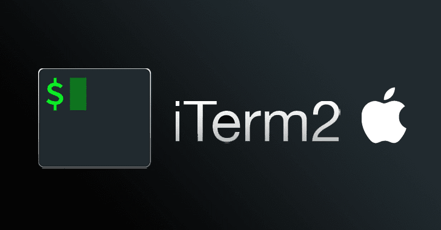

Configure the command line for data science development
![]()

1 Introduction
The command line is a powerful tool for data science development. It allows you to interact with your computer in a way that is not possible with a graphical user interface. In this guide, we will show you how to configure the command line for data science development on both macOS and Linux.
On both macOS and linux, we will be using kitty as our terminal emulator and zsh as our shell.
brew install kittyInstall kitty on Linux mint as follow:
sudo apt-get install kittyThere are a huge number of configuration options for kitty. Here are the few that recommened to change for usability purposes.
# ~/.config/kitty/kitty.conf
map ctrl+shift+z toggle_layout stack
draw_minimal_borders yes
background_opacity 0.99
font_family FiraCode Nerd Font Mono
font_size 14.0
window_margin_width 5
background_image /Users/zenn/docs/backgrounds/NxyVIMp.jpeg
window_border_width 1.5pt
include current-theme.conf2 Notes on setting up iterm2:
Useful Keyboard shortcuts
cmd + shift + enter -> maximize current window (especially useful when you use split windows)
cmd + t -> open a new tab
cmd + w -> close focused window
cmd + d -> split window vertically
cmd + shift + d -> split window horizontally
cmd + {1..9} -> Move to tab with number {1..9}
cmd + i -> change name of the tabSet up the status bar for time, git, directory. This reduces the burden on the shell prompt.
settings/profiles/session/
check “status bar enabled” at bottom of screen
In interactive screen drag “current directory”, “Empty space”, and “git state” into Active components section.
settings/appearance
“Status Bar location” select “Bottom”
or alternatively
cd ~
ln -s ~/Dropbox/dotfiles/iterm2Profiles.json .
in iterm2 profiles/Other Actions/Import JSON profiles iterm2Profiles.json
Set out the configuration needs for the shell
Good place to start:
discuss plugins particularly
z vs scd vs wd
3 .zshrc
PS1='%B%2~ %(?:%F{green}☕%f:%F{red}☔%f)%b '
setopt auto_cd auto_pushd pushd_ignore_dups pushdminus
bindkey -v
autoload -U compinit && compinit -u && compinit && compdef _dirs d
source /opt/homebrew/etc/profile.d/autojump.sh
source ~/.iterm2_shell_integration.zsh
source /opt/homebrew/share/zsh-syntax-highlighting/zsh-syntax-highlighting.zsh
source /opt/homebrew/share/zsh-autosuggestions/zsh-autosuggestions.zsh
source ~/.config/zsh/.zsh_aliases
source ~/.config/zsh/.zsh_functions
source ~/.config/zsh/.zsh_exports3.1 ~/.config/zsh/.zsh_aliases
alias mm='mutt'
alias sk='open -a Skim'
alias vc='vim ~/.vimrc'
alias vz='vim ~/.zshrc'
alias sz='source ~/.zshrc'
alias p2='enscript -C -2 -r -j --media=Letter'
alias p1='enscript -j --media=Letter'
alias yr="yabai --restart-service"
alias lt='eza -lrFha -sold'
alias mvim="/Applications/MacVim.app/Contents/bin/mvim"
alias tp='trash-put -v'
alias rm='echo "This is not the command you are looking for."; false'
alias s='scd'
alias ZZ='exit'
alias r="radian"
alias nt="nvim"
alias -g ...='../..'
alias -g ....='../../..'
alias -g .....='../../../..'
alias -g ......='../../../../..'
alias -- -='cd -'
alias 1='cd -1'
alias 2='cd -2'
alias 3='cd -3'
alias 4='cd -4'
alias 5='cd -5'
alias 6='cd -6'
alias 7='cd -7'
alias 8='cd -8'
alias 9='cd -9'
alias md='mkdir -p'
alias rd=rmdir
# List directory contents
alias lsa='ls -lah'
alias l='ls -lah'
alias ll='ls -lh'
alias la='ls -lAh'
# search for directory and cd to it
alias sd="cd ~ && cd \$(find * -type d -not -path '*/Library/*' | fzf)"3.2 ~/.config/zsh/.zsh_exports
export EDITOR="vim"
export TEXINPUTS='.:/Users/zenn/shr/images:/Users/zenn/shr:'
export PATH=".:.local/bin:/opt/homebrew/sbin:/opt/homebrew/bin:$PATH:$HOME/bin"
export vpc_id="vpc-14814b73"
export subnet_id="subnet-f02c90ab"
export ami_id="ami-014d05e6b24240371"
export keypair_name="rebecca_app"
export proj_name="rebecca_app"
export instance_type="t2.micro"
export storage_size="30"
export ami_id="ami-014d05e6b24240371"
export security_grp="sg-008cace70d32f6267"
export static_ip='13.56.101.209'
if type rg &> /dev/null; then
export FZF_DEFAULT_COMMAND='rg --files --hidden --no-ignore-vcs'
export FZF_DEFAULT_OPTS='-m --height 50% --border'
fi
export ZSH_AUTOSUGGEST_HIGHLIGHT_STYLE="fg=011,bg=black,bold,underline"
LS_COLORS+='pi=01;33:so=01;33:do=01;33:bd=01;33:cd=01;33:su=01;35:sg=01;35:ca=01;35:ex=01;32'
export LSCOLORS='ExGxDxDxCxDxDxFxFxexEx'3.3 ~/.config/zsh/.zsh_functions
function d () {
if [[ -n $1 ]]; then
dirs "$@"
else
dirs -v | head -n 10
fi
}
mma () { /Applications/Mathematica.app/Contents/MacOS/WolframKernel -script $1 }
function gz() {
git add .
git commit -a -m "$1"
git push
}4 References
Configuring Zsh Without Dependencies
read top 5 medium articles My Terminal Setup: iTerm2 + ZSH + Powerlevel10k | by Zubair Ahmed | Webtips | Medium
Settings For a Better iTerm2 Experience
iTerm2 Setup and Customization | CodeAhoy
4.1 Prerequisites
In development
4.2 Step-by-Step Implementation
In development
4.3 Key Takeaways
In development
4.4 Further Reading
In development
Reuse
Citation
@online{(ryy)_glenn_thomas2025,
author = {(Ryy) Glenn Thomas, Ronald},
title = {Configure the Command Line for Data Science Development},
date = {2025-05-13},
url = {https://focusonr.org/posts/config_term_zsh/},
langid = {en}
}